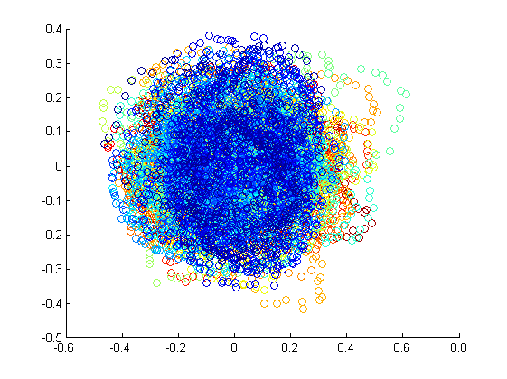
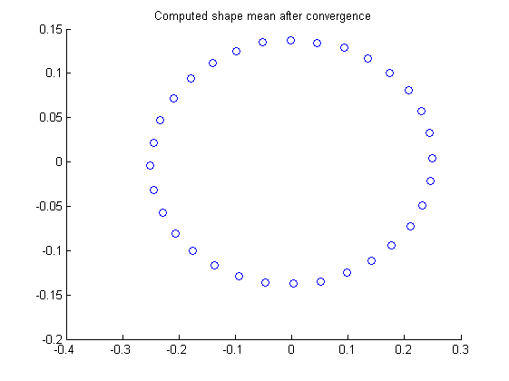
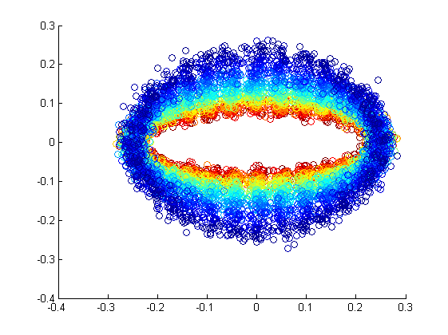
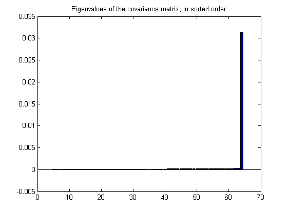
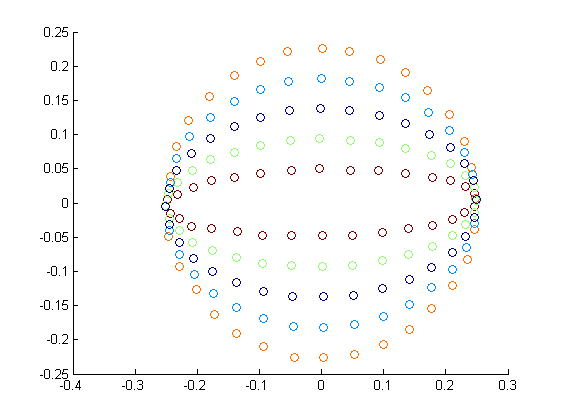
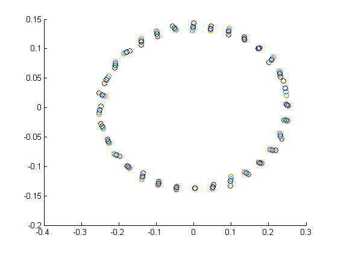
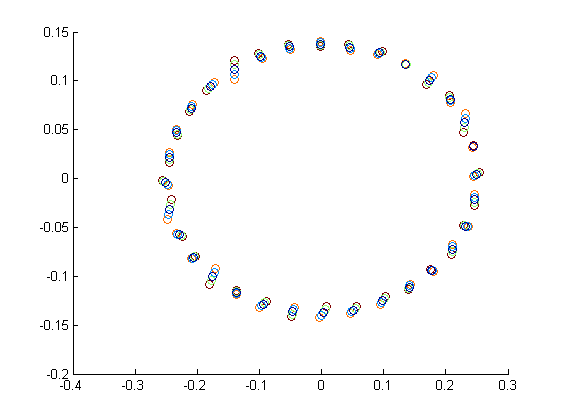
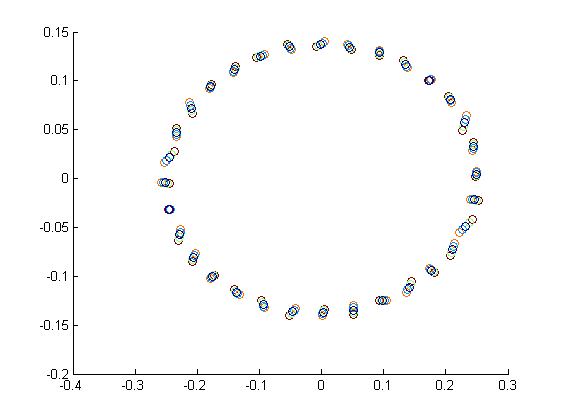
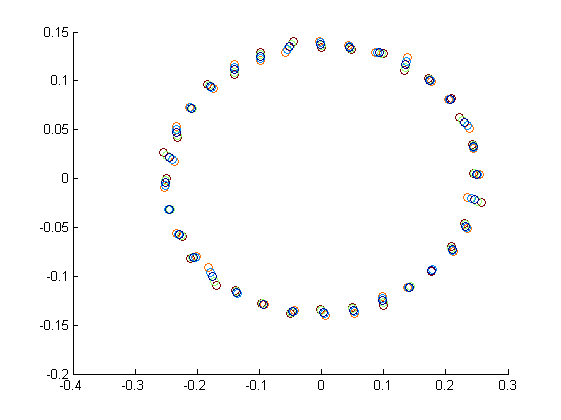

Statistical Shape Analysis
First, we load the data: numOfPoints, numOfPointSets, pointSets
clear all; load 'assignmentShapeAnalysis.mat';
Plot the initial pointsets
figure(1), plotAllSets(pointSets, 'initial-pointset', 'Initial set of points');
Initial estimate for mean meanEstimate = pointSets(:,:,1);
meanEstimate = estimateMean(pointSets); for iter = 1:10 for i = 1:300 pointSets(:,:,i) = align(pointSets(:,:,i), meanEstimate); end meanEstimate = estimateMean(pointSets); % temp = align(meanEstimate, pointSets(:,:,1)); % meanEstimate = temp; end figure(2), plotPointSet(estimateMean(pointSets), 'Computed shape mean after convergence', 'computed-shape-mean');
Plot the pointsets after the alignment algorithm has converged
figure(3), plotAllSets(pointSets, 'converged-pointset', 'Converged set of points');
meanReshaped = repmat(meanEstimate, [1 1 numOfPointSets]); shifted = pointSets - meanReshaped; transposed = permute(shifted, [2 1 3]);
Eigendecompose the converged pointsets and obtain the modes of variation
[V,D] = variationAnalysis(transposed); figure(4); eigvals = bar(diag(D)); title('Eigenvalues of the covariance matrix, in sorted order'), saveas(eigvals, '../Images/eigenvalues', 'png');
Observe the variations along different modes
shape1 = reconstructShape(meanEstimate, V, D, 1); shape2 = reconstructShape(meanEstimate, V, D, 2); shape3 = reconstructShape(meanEstimate, V, D, 3); shape4 = reconstructShape(meanEstimate, V, D, 4); shape5 = reconstructShape(meanEstimate, V, D, 5);
Plot the variations and write them to disk
figure(5), plotAllSets(shape1, strcat('mode', int2str(1)), 'Variation of mean shape along mode 1'); figure(6), plotAllSets(shape2, strcat('mode', int2str(2)), 'Variation of mean shape along mode 2'); figure(7), plotAllSets(shape3, strcat('mode', int2str(3)), 'Variation of mean shape along mode 3'); figure(8), plotAllSets(shape4, strcat('mode', int2str(4)), 'Variation of mean shape along mode 4'); figure(9), plotAllSets(shape5, strcat('mode', int2str(5)), 'Variation of mean shape along mode 5'); % close all    
diag(D)'